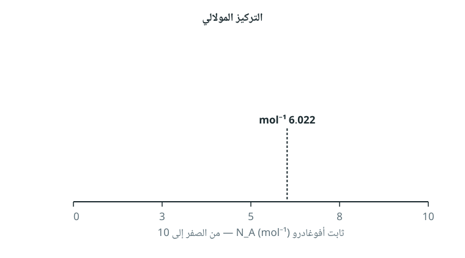

التركيز المولالي
Molal concentration (molality)
التركيز المولالي هو عدد مولات المذاب في كيلوغرام واحد من المذيب، ووحدته mol/kg. يتميّز عن المولارية بأنه لا يعتمد على حجم المحلول، فلا يتغيّر بتبدّل الحرارة أو الضغط، ولهذا يُستعمل في حساب الخواص الجامدة كالارتفاع الغلياني والانخفاض التجمدي.
التركيز المولالي b يُعرَّف بأنه كمية المذاب بالمول مقسومة على كتلة المذيب بالكيلوغرام: b = n(المذاب)/m(المذيب)، ووحدته mol/kg وتُكتب أحياناً molal. سُمّي مولالياً تمييزاً له عن المولاري الذي يقسم على حجم المحلول لا على كتلة المذيب. وأهمية الفرق عملية: حجم المحلول يتمدد بالحرارة فتتغيّر المولارية، أما كتلة المذيب فلا تتغيّر بالحرارة، فيبقى التركيز المولالي ثابتاً في نطاق واسع من الظروف. مثال: إذابة 0.500 mol من السكروز في 0.250 kg من الماء تعطي b = 0.500/0.250 = 2.00 mol/kg. ولأن الكتلة تُقاس بالميزان بدقة أعلى من قياس الحجم، تُفضَّل المولالية في القياسات الدقيقة للخواص الجامدة.
كيف تعمل الظاهرة؟
الخواص الجامدة للمحلول — انخفاض ضغط البخار والارتفاع الغلياني والانخفاض التجمدي والضغط الإسموزي — تتناسب مع عدد الجزيئات المذابة في كتلة معيّنة من المذيب، لا مع حجم المحلول. والسبب أن هذه الخواص تنشأ من إزاحة جزيئات المذيب عند سطح المحلول أو عند جبهة التجمد بفعل الجزيئات المذابة، وهي عملية تُقاس بكمية المذيب المتاحة لا بحجم الوعاء. لذلك صُمّمت المولالية لتكون المقياس الطبيعي لهذه الخواص: كتلة المذيب هي الكمية التي تبقى ثابتة حين يتمدد المحلول أو ينكمش.
العلاقة بالأرقام
b = n_B/m_A بوحدة mol/kg. والعلاقة بالمولارية: c = b·ρ/(1 + b·M_B) حيث ρ كثافة المحلول بوحدة kg/L وM_B الكتلة المولية للمذاب بوحدة kg/mol. مثال: محلول NaCl بتركيز مولالي 1.0 mol/kg وكثافته 1.038 kg/L وM = 0.05844 kg/mol يعطي c = 1.0×1.038/(1+1.0×0.05844) = 0.980 mol/L. والفرق 2% يكفي لتغيير نتيجة حسابية دقيقة، ويزداد الفرق مع التراكيز الأعلى.
مفاهيم متقاربة
يُفرَّق بين المولالية والمولارية في المقام: كتلة مذيب مقابل حجم محلول. ويُفرَّق بين المولالية والكسر المولي في أن الأولى بُعدية بوحدة mol/kg والثانية بلا بُعد. ويُفرَّق بين المولالية والتركيز الكتلي بوحدة kg/m³ في أن الأخير كتلة مذاب إلى حجم محلول. وأخيراً يُفرَّق بين المولالية الظاهرية والمولالية الفعلية في المحاليل الإلكتروليتية: الأيونات تتفكك فيتضاعف الأثر الجامد، ويُصحَّح بمعامل فانت هوف i الذي يقيس عدد الجزيئات الفعلية لكل صيغة.
حدود التطبيق
المولالية محدودة الفائدة حين لا يكون المذيب معروفاً بدقة، كما في المحاليل التجارية مجهولة التركيب. ولا تصف سلوك المحاليل المركزة جداً حيث تتداخل الجزيئات المذابة ويصبح النموذج المثالي غير صالح. وفي المحاليل التي يتبادل فيها المذاب مع المذيب — كالمحاليل الحمضية المركزة التي تستهلك الماء — تتغيّر كتلة المذيب نفسها أثناء التفاعل فيفقد التعريف مرجعه. كذلك لا تُستعمل المولالية لقياس تراكيز الغازات، حيث الأنسب الكسر المولي أو الضغط الجزئي.

| الكمية | القيمة | المصدر |
|---|---|---|
| التركيز المولالي للمثال | 2.00 mol·kg⁻¹ | [1] |
| الكسر المولي للسكروز في المثال | 0.0348 بلا وحدة | [1] |
المصادر
- 1 The International System of Units (SI), 9th edition (2019) — BIPM — Bureau International des Poids et Mesures (2019). www.bipm.org/en/publications/si-brochure · اطُّلع عليه 2026-11-21
- 2 CODATA Value: Avogadro constant — NIST — CODATA 2022 recommended values (2024). physics.nist.gov/cgi-bin/cuu/Value?na · اطُّلع عليه 2026-11-21
- 3 The International System of Units (SI), 9th edition (2019) — BIPM — Bureau International des Poids et Mesures (2019). www.bipm.org/en/publications/si-brochure · اطُّلع عليه 2026-11-21
استشهد بهذا المصطلح
الصيغتان مبنيتان من بيانات الصفحة نفسها: العنوان والتاريخ ورابط النسخة المنشورة.
التركيز المولالي — Molal concentration (molality). (2026). ديوان المعرفة — انفراد. https://infiradev.com/diwan/terms/term-molal-concentration.html
@misc{term-molal-concentration2026,
title = {التركيز المولالي},
titleaddon = {Molal concentration (molality)},
howpublished = {{ديوان المعرفة — انفراد} — مرجع علمي عربي},
year = {2026},
url = {https://infiradev.com/diwan/terms/term-molal-concentration.html},
urldate = {2026-11-26},
note = {مراجعة علمية: hermes (مراجعة معتمدة 2026-11-26)}
}
راجعه: hermes (مراجعة معتمدة 2026-11-26) · 2026-11-26 · آخر تحديث 2026-11-21